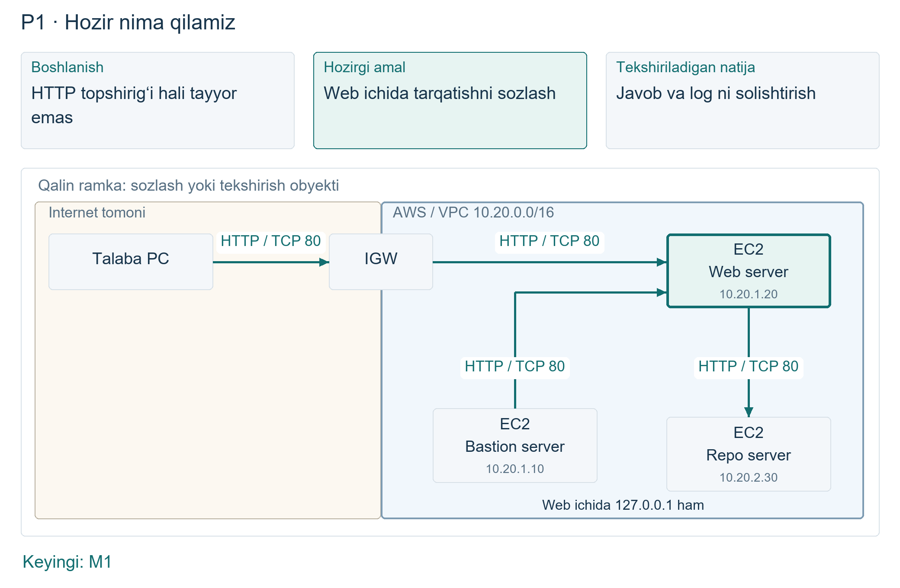
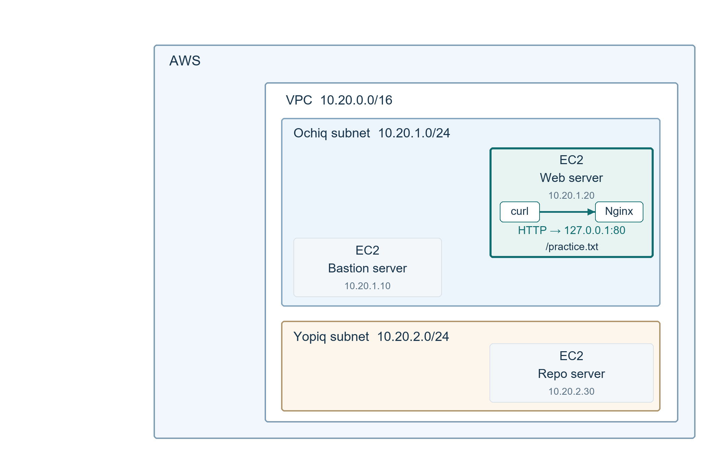
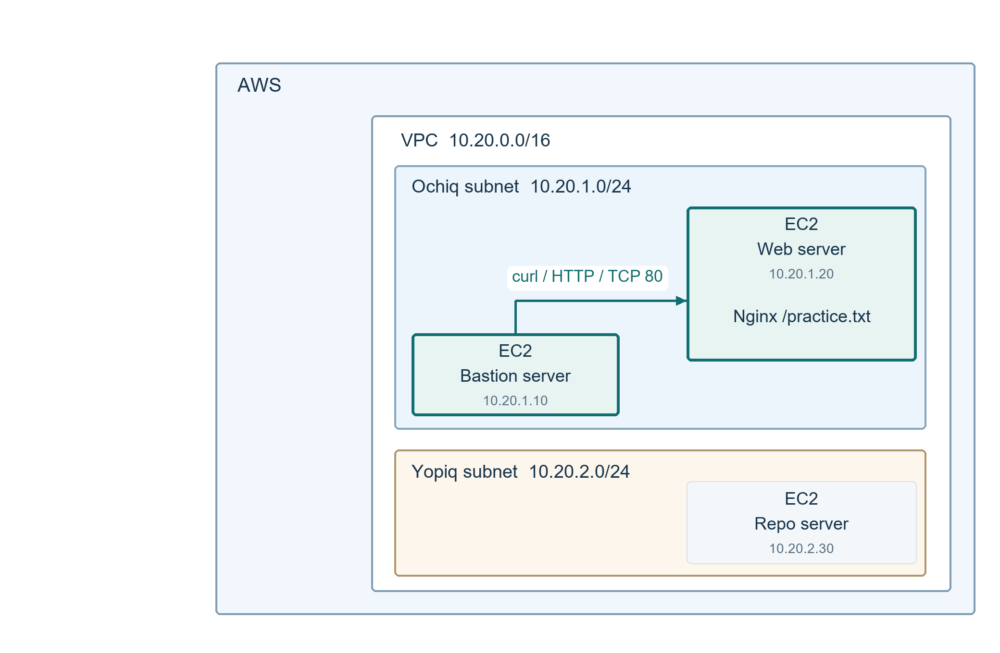

P1 HTTP orqali statik faylni qaytarish
Mashqlar P0–P5 · Topshiriqlar M0–M5
Mos topshiriq: M1.
Nimani o‘rganamiz
Nginx, fayl joyi, tinglash porti, HTTP javobi va access log ni bog‘lash.
Topshiriq
Web serverdagi /var/www/html/practice.txt faylini HTTP 200 bilan qaytaring.
Topshiriq diagrammasi

- File: /var/www/html/practice.txt
- URL path: /practice.txt
JDU WEB-02 practice: HTTP response verified.
Practice1 da bajariladigan ishlar
Nginx da HTTP uchun TCP 80 portini oching va /practice.txt so‘roviga fayl matnini qaytaring. Web serverning o‘z terminalidan va Bastion terminalidan so‘rov yuboring, so‘ng ularni Nginx access log ida tekshiring.
Yechim namunasi (bajarish tartibi)
P1.1 Ichki APT dan Nginx o‘rnatish
Bajarish muhiti:
Web serverning SSM terminali: ssm-user
Maqsad va amallar:
P0 dagidek Web serverga SSM orqali ulaning. Nginx paketini ichki Repo serveridan (10.20.2.30) yuklab olib, Web serverga o‘rnating.

Buyruqlar: raqamlar shu qadam ichidagi tartib
# 1. Ichki serverdagi paketlar ro‘yxatini yangilash.
sudo apt-get update
# 2. Ichki paket serveridan nginx ni o‘rnatish.
sudo apt-get install nginx
Buyruq va sozlamalar ma’nosi:
apt-get update mavjud paketlar ro‘yxatini yangilaydi. apt-get install nginx shu ro‘yxat yordamida Nginx ni o‘rnatadi.
Kutilgan natija va ma’nosi:
Ro‘yxat yangilanganda ichki server qatorida Hit: yoki Get: ko‘rinadi. N: Ignoring file ... ubuntu.sources.jdu-disabled xabari APT dastlabki sozlashda o‘chirilgan standart Ubuntu manbasi faylini o‘tkazib yuborganini bildiradi. Yuklash yoki imzo tekshiruvida xato bo‘lmasa, o‘rnatishni davom ettiring. Tasdiq so‘ralsa, Y kiriting.
Ishlamasa:
Paketlar ro‘yxatini olib bo‘lmasa, ichki paket serverining holati va IP manzilini tekshiring.
P1.2 Aniq matn yaratish va ruxsatlarni sozlash
Bajarish muhiti:
Web serverning SSM terminali: ssm-user
Maqsad va amallar:
Matnni ish fayliga yozing, keyin uni Nginx fayllarni tarqatadigan katalogga nusxalang.
Buyruqlar: raqamlar shu qadam ichidagi tartib
# 1. O‘z uy katalogingizga o‘ting.
cd ~
# 2. Mashq katalogini yaratish; mavjud bo‘lsa saqlash.
mkdir -p jdu-web-practice/p1
# 3. Ish katalogini jdu-web-practice/p1 ga o‘zgartirish.
cd jdu-web-practice/p1
# 4. Joriy ish katalogini ko‘rsatish.
pwd
# 5. Practice.txt ni ochish: matn yozish, saqlash va chiqish.
nano practice.txt
nano oynasiga yoziladigan matn
JDU WEB-02 practice: HTTP response verified.
nano oynasiga yuqoridagi qatorni aynan yozing va oxirida Enter tugmasini bosing. Ctrl+O va Enter orqali saqlang, Ctrl+X orqali chiqing. Terminalga qaytgach, 6-qadamdan davom eting.
Buyruqlar: raqamlar shu qadam ichidagi tartib
# 6. practice.txt faylini Web serverning ochiq katalogiga nusxalash.
sudo cp practice.txt /var/www/html/practice.txt
# 7. /var/www/html/practice.txt egasi va guruhini root:root ga o‘zgartirish.
sudo chown root:root /var/www/html/practice.txt
# 8. /var/www/html/practice.txt huquqlarini 0644 ga o‘zgartirish.
sudo chmod 0644 /var/www/html/practice.txt
# 9. Ko‘rsatilgan fayl owner, guruh, permission va nomini o‘qish.
stat -c '%U:%G %a %n' /var/www/html/practice.txt
# 10. /var/www/html/practice.txt mazmunini o‘zgartirmay o‘qish.
cat /var/www/html/practice.txt
Buyruq va sozlamalar ma’nosi:
cp matnni tarqatiladigan faylga nusxalaydi. chown root:root nusxaning egasi va guruhini root ga o‘zgartiradi. chmod 0644 egaga o‘qish va yozish, guruh va boshqa foydalanuvchilarga o‘qish huquqini beradi.
Kutilgan natija va ma’nosi:
root:root 644 egasi, guruhi va ruxsatlari hamda JDU WEB-02 practice: HTTP response verified. qatori ko‘rinadi.
Ishlamasa:
Nano hali ochiq bo‘lsa, keyingi buyruqdan oldin faylni saqlab chiqing.
P1.3 Web root ni tekshirish va service ni ishga tushirish
Bajarish muhiti:
Web serverning SSM terminali: ssm-user
Maqsad va amallar:
nginx -T bilan amaldagi sozlamani chiqaring. /etc/nginx/sites-enabled/default ichidan root /var/www/html va listen 80 ni toping. Kerak bo‘lsa sudo nano bilan tahrirlang va sintaksis tekshiruvidan keyin sozlamani qayta yuklang.
Buyruqlar: raqamlar shu qadam ichidagi tartib
# 1. Nginx ning to‘liq sozlamasini chiqarib, qanday yozilganini tekshirish.
sudo nginx -T
# 2. Nginx config sintaksisi va fayllarini tekshirish.
sudo nginx -t
# 3. nginx ni hozir yoqish va avtomatik start ni yoqish.
sudo systemctl enable --now nginx
# 4. nginx ni to‘xtatmay sozlamani qayta o‘qish.
sudo systemctl reload nginx
# 5. nginx joriy ish holatini o‘qish.
systemctl is-active nginx
# 6. Nginx TCP 80 portini, masalan 0.0.0.0:80 manzilida tinglayotganini tekshirish.
sudo ss -lntp
Buyruq va sozlamalar ma’nosi:
Nginx -T config ni ko‘rsatadi; -t sintaksisni tekshiradi. Systemctl enable keyingi boot da ishga tushishni, --now hozir ishga tushishni belgilaydi. Fayl saqlangach reload, service holati va portni tekshiring.
Kutilgan natija va ma’nosi:
Sintaksis tekshiruvida syntax is ok va test is successful, xizmat holatida active chiqadi. Nginx TCP 80 portini, masalan 0.0.0.0:80 manzilida tinglayotganini tekshiring.
Ishlamasa:
Sintaksis xatosida nginx -t ko‘rsatgan fayl va qatorni tuzating.
P1.4 Web ichidan javobni ko‘rish
Bajarish muhiti:
Web serverning SSM terminali: ssm-user
Maqsad va amallar:
Web server terminalida curl bilan HTTP so‘rov yuboring. 127.0.0.1 buyruq bajarilayotgan Web serverning o‘zini bildiradi.

Buyruqlar: raqamlar shu qadam ichidagi tartib
# 1. http://127.0.0.1/practice.txt manziliga HTTP so‘rov yuborish.
curl -i http://127.0.0.1/practice.txt
Buyruq va sozlamalar ma’nosi:
127.0.0.1 - loopback manzili. So‘rov shu Web server ichidagi Nginx ga yetib boradi.
Kutilgan natija va ma’nosi:
HTTP 200 va practice.txt ichidagi JDU WEB-02 practice: HTTP response verified. qatori chiqadi.
Ishlamasa:
«Welcome to nginx» chiqsa, curl buyrug‘ida /practice.txt ko‘rsatilganini tekshiring. http://127.0.0.1/ manzili Nginx bosh sahifasini qaytarishi mumkin.
P1.5 Ayni faylni Bastion serveridan tekshirish
Bajarish muhiti:
Bastionning SSM terminali: ssm-user
Maqsad va amallar:
Bastion serverga SSM orqali ulaning va curl bilan Web serverga HTTP so‘rov yuboring. Ichki tarmoqdan Web serverning ichki IP manzili 10.20.1.20 ni kiriting.

Buyruqlar: raqamlar shu qadam ichidagi tartib
# 1. http://10.20.1.20/practice.txt manziliga HTTP so‘rov yuborish.
curl -i http://10.20.1.20/practice.txt
Buyruq va sozlamalar ma’nosi:
Manzil Web serverning ichki IP siga o‘zgaradi. Fayl yo‘li P1.4 dagidek /practice.txt bo‘lib qoladi.
Kutilgan natija va ma’nosi:
HTTP 200 va JDU WEB-02 practice: HTTP response verified. qatori chiqadi.
P1.6 So‘rovni log bilan bog‘lash va yuborish
Bajarish muhiti:
Web serverning SSM terminali: ssm-user
Maqsad va amallar:
Web ga qayting. Access log da vaqt, client IP, path va statusni ko‘ring. Bu fayl borligidan tashqari so‘rov ishlanganining dalilidir. Exit bilan CloudShell ga qaytgach, PC dagi Web Portal da P1 ni tekshiring.
Buyruqlar: raqamlar shu qadam ichidagi tartib
# 1. Access log oxirgi 20 qatoridan oldingi HTTP so‘rovini topish.
sudo tail -n 20 /var/log/nginx/access.log
# 2. Joriy server session ini yopib CloudShell ga qaytish.
exit
Buyruq va sozlamalar ma’nosi:
Access log dagi vaqt, path va status ni oldingi curl bilan solishtiring. Tail oxirgi qatorlarni o‘qiydi, log ni o‘zgartirmaydi. Exit dan keyin PC brauzerida P1 ni tekshiring.
Kutilgan natija va ma’nosi:
Ekranda sakkizta tekshiruv natijasi va bajarilgan mezonlar soni ko‘rinadi. Tizim ochiq IP orqali HTTP ulanishini avtomatik tekshiradi.
Ishlamasa:
Ishlov davom etsa natijani yangilang. Saqlash xatosida sababni o‘qing. Checker kutgan matnni o‘zgartirmang.
Natijani o‘qish namunasi (kiritmang)
HTTP/1.1 200 OK
JDU WEB-02 practice: HTTP response verified.
Faqat kerakli qatorlar ko‘rsatilgan; haqiqiy javobda boshqa header lar ham bor. 200, matn va access log dagi path/status ni tekshiring.
Tushunishni tekshirish (ballsiz)
Web ichida 200, bastiondan ulanish ishlamaydi. Faylni qayta yozishdan oldin nimani tekshirasiz?
Izoh:
Manzil IP, listen address/port va bastion → Web ruxsatini tekshiring. Fayl mazmuni va yetib borish alohida tekshiruvdir.